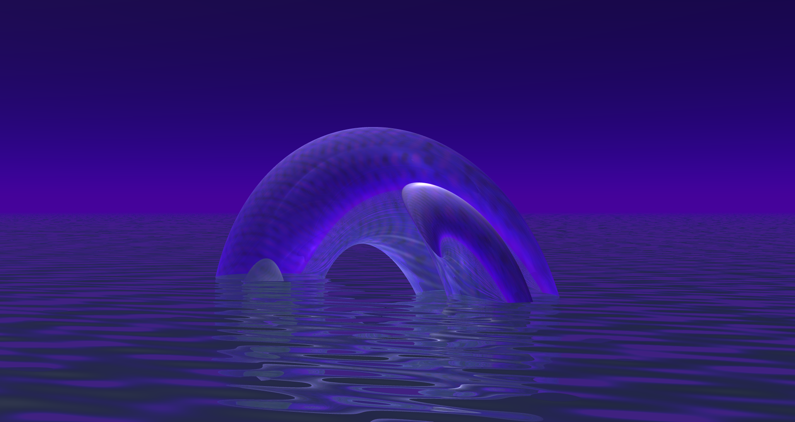

<- Go Back
I really like retro digital art, and here you can find my attempts at emulating some of those styles. Title - Style - Software - Year
Blurred Horizon - Retro CGI - Bryce 7 - 2020

peepoe - ANSI Art - Moebius - 2020

Acidic Reflections - Retro CGI - Bryce 7 - 2020
Smile! - ANSI Art - Moebius - 2020
Emptiness - Retro CGI - Bryce 7 - 2020